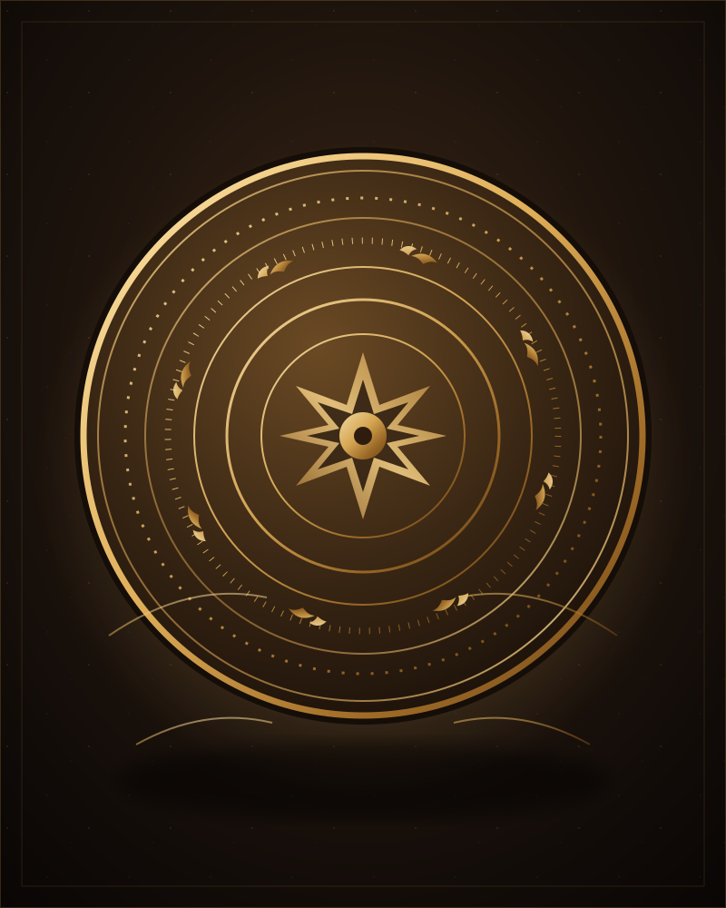
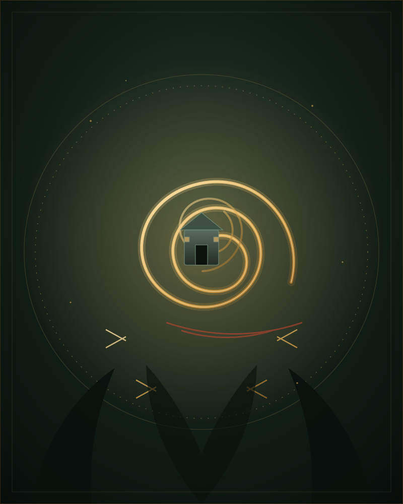
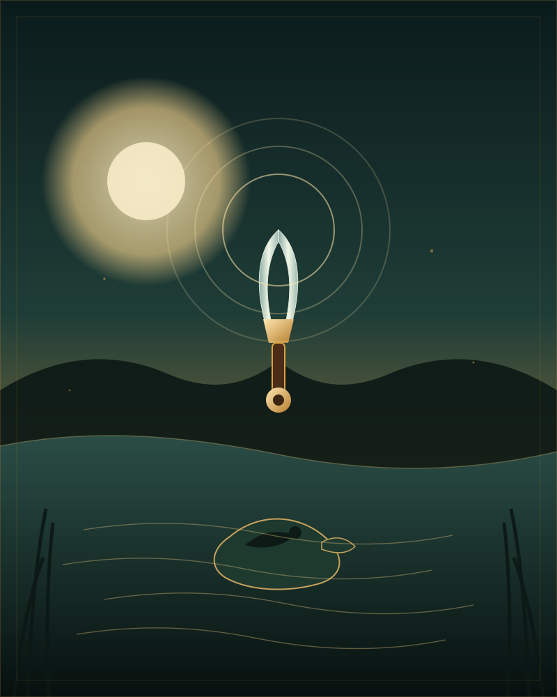
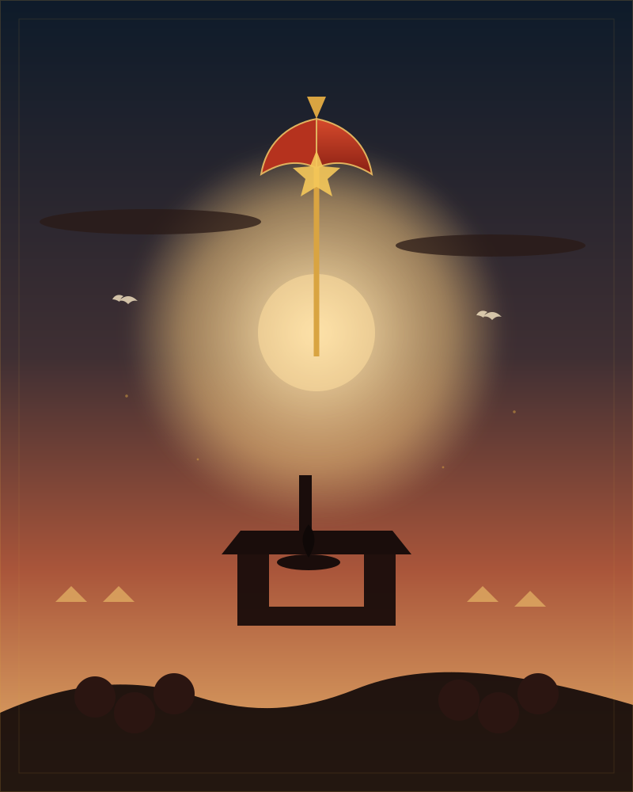
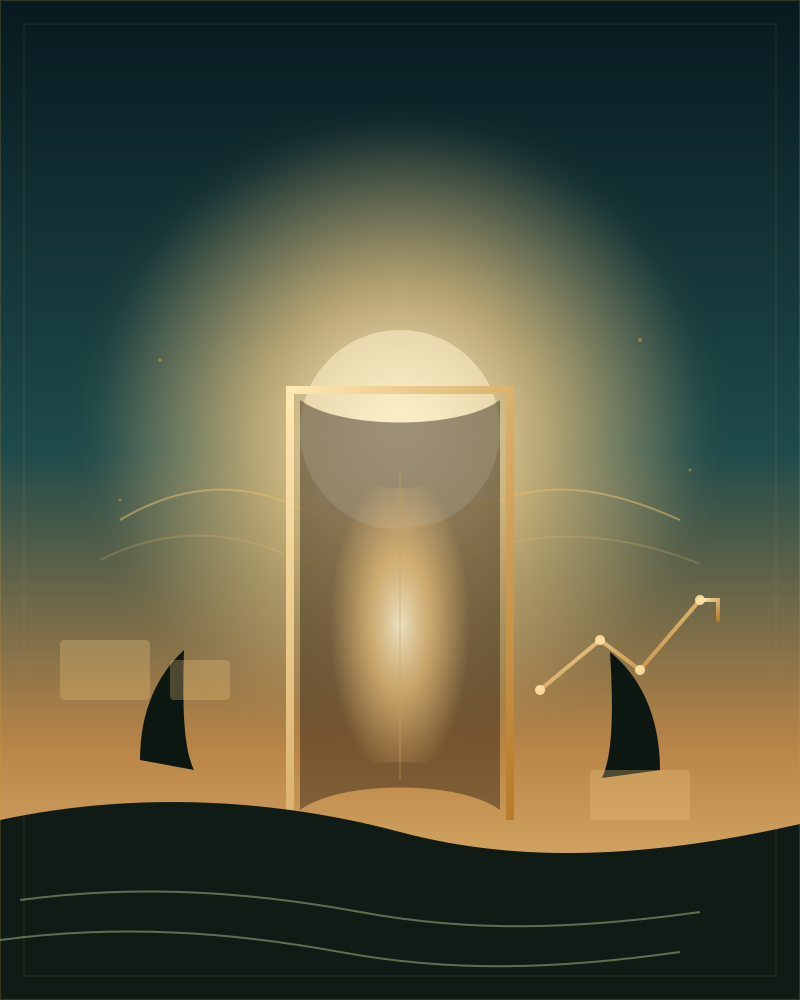

Hành trình 4.000 năm
VIỆT
NAM
Từ Văn Lang buổi đầu dựng nước đến Việt Nam hôm nay — 14 cột mốc, một dân tộc, một mạch nguồn không ngừng chảy.

01 / Hồng Bàng
2879 – 258 TCNBuổi đầu
dựng nước
Từ huyền thoại Lạc Long Quân – Âu Cơ đến nhà nước Văn Lang của 18 đời Hùng Vương, người Việt cổ dựng nên nền văn minh lúa nước bên sông Hồng.
- Nhà nướcVăn Lang – 15 bộ
- Kinh đôPhong Châu, Phú Thọ
- Kinh tếLúa nước, đúc đồng
- Dấu ấnTrống đồng Đông Sơn
02 / Âu Lạc
257 – 179 TCNThành Cổ Loa
và nỏ thần
Thục Phán hợp nhất Văn Lang với Âu Việt, lập nước Âu Lạc và xây thành Cổ Loa — kinh đô xoáy ốc kiên cố bậc nhất thời cổ.
- Nhà nướcÂu Lạc
- Kinh đôCổ Loa, Đông Anh
- Công trình3 vòng thành xoáy
- Bi kịchMỵ Châu – Trọng Thủy

03 / Bắc thuộc
40 – 43 SCNHai Bà Trưng
dựng cờ khởi nghĩa
Sau hơn hai thế kỷ Bắc thuộc, cuộc khởi nghĩa Mê Linh của Trưng Trắc và Trưng Nhị bùng nổ, giải phóng 65 thành trì.
- Thời gian40 – 43 SCN
- Căn cứMê Linh, Vĩnh Phúc
- Thành quảGiải phóng 65 thành
- Biểu tượngTinh thần nữ nhi bất khuất
04 / Độc lập
938Bạch Đằng
938
Ngô Quyền dùng cọc gỗ và thủy triều đánh tan quân Nam Hán, chấm dứt hơn 1.000 năm Bắc thuộc.
- Năm938
- Địa điểmSông Bạch Đằng
- Chiến thuậtCọc gỗ + thủy triều
- Ý nghĩaKết thúc Bắc thuộc
05 / Nhà Lý
1010 – 1225Dời đô,
mở nền văn hiến
Năm 1010, Lý Thái Tổ dời đô về Đại La, đổi tên Thăng Long — mở ra thời kỳ hưng thịnh của văn minh Đại Việt.
- Năm 1010Chiếu dời đô
- Kinh đôThăng Long, Hà Nội
- Giáo dụcVăn Miếu – Quốc Tử Giám
- Dấu ấnChùa Một Cột
06 / Nhà Trần
1258 – 1288Hào khí
Đông A
Ba lần đánh bại quân Nguyên Mông, triều Trần khẳng định bản lĩnh của một dân tộc không chịu khuất phục.
- Ba lần1258 · 1285 · 1288
- Chỉ huyTrần Hưng Đạo
- Hội nghịDiên Hồng, Bình Than
- Đỉnh caoBạch Đằng 1288
07 / Lam Sơn
1418 – 1428Mười năm
khởi nghĩa Lam Sơn
Từ vùng rừng núi Thanh Hóa, nghĩa quân Lam Sơn đánh đuổi quân Minh, giành lại độc lập sau mười năm gian khổ.
- Bắt đầu1418 tại Lam Sơn
- Kéo dài10 năm
- Chiến thắngChi Lăng – Xương Giang
- Văn bảnBình Ngô đại cáo

08 / Tây Sơn
1771 – 1792Quang Trung
đại phá quân Thanh
Từ khởi nghĩa nông dân, anh em Tây Sơn thống nhất đất nước và làm nên chiến thắng thần tốc mùa xuân 1789.
- Khởi nghĩa1771
- Rạch Gầm – Xoài Mút1785
- Ngọc Hồi – Đống Đa1789
- Hoàng đếQuang Trung – Nguyễn Huệ
09 / Nhà Nguyễn
1802 – 1945Kinh thành Huế
và triều Nguyễn
Gia Long thống nhất đất nước, đặt kinh đô tại Huế; triều Nguyễn để lại quần thể cung đình đồ sộ bên sông Hương.
- Năm 1802Gia Long lập nhà Nguyễn
- Kinh đôPhú Xuân – Huế
- Quốc hiệuViệt Nam, 1804
- Di sảnCố đô Huế
10 / Pháp thuộc
1858 – 1945Đêm dài nô lệ
và những ngọn lửa
Gần một thế kỷ thuộc địa, nhưng chưa bao giờ phong trào yêu nước ngừng cháy.
- 1858Pháp nổ súng Đà Nẵng
- 1885 – 1896Phong trào Cần Vương
- 1930Thành lập Đảng
- 1941Mặt trận Việt Minh
11 / 1945
Cách mạng tháng TámMùa thu
độc lập
Cách mạng tháng Tám thành công; ngày 2/9/1945, Chủ tịch Hồ Chí Minh đọc Tuyên ngôn độc lập tại Quảng trường Ba Đình.
- 19/8/1945Khởi nghĩa Hà Nội
- 2/9/1945Tuyên ngôn độc lập
- Địa điểmQuảng trường Ba Đình
- Tên nướcViệt Nam Dân chủ Cộng hòa

12 / 1954 – 1975
Kháng chiến & thống nhấtTừ Điện Biên Phủ
đến mùa xuân đại thắng
Chiến thắng Điện Biên Phủ lừng lẫy năm châu, rồi cuộc tổng tiến công mùa xuân 1975 thống nhất non sông.
- 7/5/1954Điện Biên Phủ
- 21/7/1954Hiệp định Genève
- 30/4/1975Giải phóng miền Nam
- 1976Nước CHXHCN Việt Nam
13 / Đổi Mới
1986Đổi Mới —
mở cửa và cất cánh
Đại hội VI tháng 12/1986 khởi xướng công cuộc Đổi Mới, đưa Việt Nam bước vào kinh tế thị trường và hội nhập.
- 12/1986Đại hội VI
- Chủ trươngKinh tế thị trường
- 1995Gia nhập ASEAN
- 2007Gia nhập WTO

14 / Hôm nay
1986 – 2026Việt Nam
hôm nay & ngày mai
Hơn 100 triệu dân, nền kinh tế năng động, 8 di sản thế giới — Việt Nam đang viết tiếp trang sử của mình.
- Dân sốHơn 100 triệu người
- Di sản UNESCO8 di sản thế giới
- Diện tíchHơn 331.000 km²
- Khát vọngThịnh vượng, hội nhập